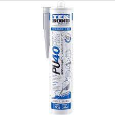
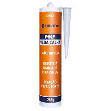
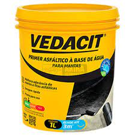
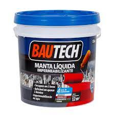
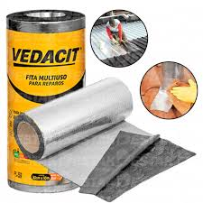

PU 40
É utilizado na construção civil, em juntas de dilatação, pisos internos,
calhas, vidros, pias e juntas sanitárias. Na indústria automobilística é aplicado em carrocerias
e
baús de caminhões em partes com trepidações, calafetagem, câmaras frigoríficas, entre outras.

Veda Calha
veda calha quartzolit é uma nova tecnologia em adesivo vedante desenvolvida especialmente para
impedir a passagem de água através de conexões de calhas e rufos.
Contém grande poder de adesão que permite seu uso como solda fria de chapas metálicas ou de PVC.

Primer a base de agua
é uma solução asfáltica indicada para imprimação de superfícies de concreto ou argamassa para
colagem de mantas asfálticas.
Apresenta secagem rápida e alto poder de aderência.

Manta liquida
Manta líquida é o nome dado ao sistema de impermeabilização flexível acrílico utilizado para
proteção de elementos externos da edificação.
A manta líquida é aplicada à frio diretamente sobre os elementos de concreto, respeitando os
procedimento de preparação e limpeza da superfície.

Manta asfáltica
A manta asfáltica pode ser usada na impermeabilização de lajes, telhados,
terraços e áreas frias externas de obras novas ou retrofit – neste último, é preciso quebrar o
piso até chegar ao contrapiso ou à manta antiga.

Zarcão
Fundo sintético anticorrosivo com secagem rápida, boa aderência e utilizado na primeira demão de
metais ferrosos
e na repintura de partes afetadas com ferrugem.Sua principal função é inibir a ferrugem.